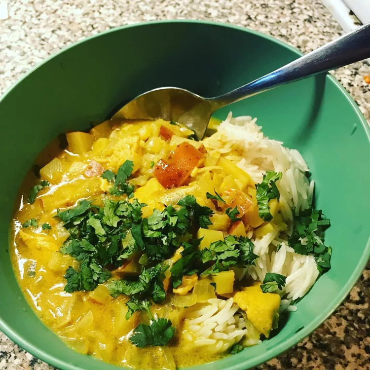

Chicken Curry

This Thai-style curry is fast and easy to make. It has a unique flavor that makes this dish anything but ordinary. Serve over jasmine rice.
Ingredients
- 1 tablespoon olive oil
- 3 tablespoons Thai yellow curry paste (such as Mae Ploy®)
- 1 pound cooked skinless, boneless chicken breast, cut into bite-size pieces
- 2 (14 ounce) cans coconut milk
- 1 cup chicken stock
- 1 yellow onion, chopped
- 3 small red potatoes, cut into cubes, or as needed
- 3 red Thai chile peppers, chopped with seeds, or more to taste
- 1 teaspoon fish sauce
Steps
- Heat oil in a skillet over medium-high heat. Stir curry paste into oil until smooth. Add chicken; stir to coat each piece.
- Pour 1 can coconut milk into skillet and stir until curry paste is completely dissolved and begins to bubble, 3 to 5 minutes. Pour remaining coconut milk, chicken stock, onion, potatoes, and chile peppers into curry paste mixture. Bring to a boil, reduce heat to low, and simmer until potatoes are tender, about 25 minutes. Remove from heat.
- Stir fish sauce into chicken curry mixture just before serving.